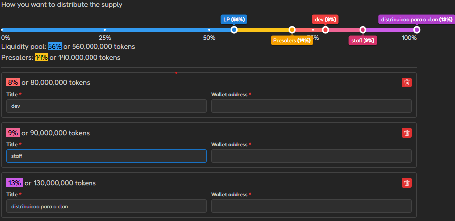

Domine o mundo dos MMORPGs com estratégia, trabalho em equipe e recompensas justas!
Este é um projeto para validar o uso de tokens como moeda de reconhecimento e troca para os jogadores ativos que atingiram as metas do clan. O uso do token é de exclusividade do clan, e qualquer tipo de especulação no token não é de nossa responsabilidade.
A meta de power será definida em breve. Fique atento!
Contribua com doações diárias para fortalecer o clan e garantir recursos para todos.
Participe ativamente dos conteúdos do clan, como raids, dungeons e eventos especiais.
De acordo com a nossa experiência durante 10 anos jogando MMORPG, vimos que uma das grandes dificuldades de um clan é manter a consistência e recompensar os jogadores que fazem a diferença. Sendo assim, estamos fazendo um teste para utilizar a Web3 a nosso favor. Propomos a criação de um token para viabilizar o acesso aos recursos do clan. Informações sobre o tokenomics estão logo abaixo.
O clan terá metas semanais que serão divulgadas neste site todo domingo até as 23:59 BRT, com um comunicado no Discord.
Rede:Network:Red: Solana
Símbolo:Symbol:Símbolo: YMIRSOL (Token em pré-venda!)
Distribuição do Token:Token Distribution:Distribución del Token:
Supply:Supply:Suministro: 1,000,000,000
O token está em pré-venda! Quem adquirir o token durante a pré-venda terá todas as vantagens oferecidas pela plataforma GFM (www.gofundmeme.io). Clique aqui para saber mais sobre as vantagens.
Nossa equipe é composta por:
Participe da nossa comunidade e fique por dentro de todas as novidades:
Entrar no Discord